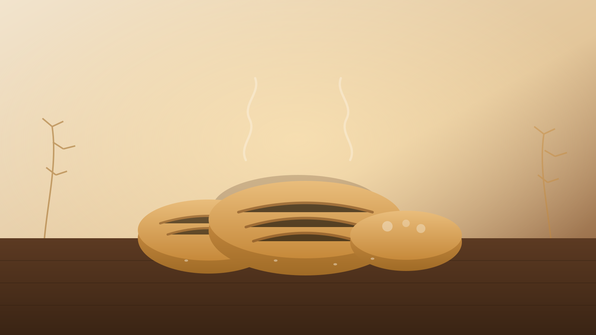

Familienbetrieb seit 1890
Bäckerei Eichholz & Hochzeitstorten
Ihre Bäckerei und Konditorei im Bereich Eisenach. Täglich frisches Brot, Brötchen und Kuchen aus eigener Backstube – und Torten, die für Ihren besonderen Anlass von Hand gestaltet werden.
Entdecken Sie uns
Handwerk, das man schmeckt
Von knusprigem Brot über feine Kuchen bis zur individuellen Festtagstorte – seit über 130 Jahren mit Leidenschaft gebacken.
Tortengalerie
Eine Auswahl unserer Tortenkunst
Jede Torte ein Unikat – von Hand gestaltet für Hochzeiten, Geburtstage und Festtage.


Torten nach Maß
Kuchen und Torten – ganz nach Ihrem Wunsch
Keine Torte gleicht der anderen: Jede Hochzeits-, Geburtstags- oder Festtagstorte wird bei uns als Einzelstück gefertigt. Teilen Sie uns Ihre Wünsche über unser Kontaktformular mit oder rufen Sie uns einfach an – wir beraten Sie gerne.
Mehr über unsere Geschichte